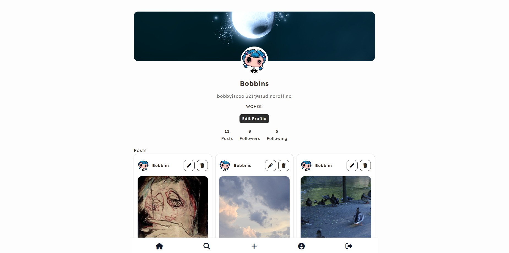

CSS Frameworks
Social Media App

About the project
Social Media App is a frontend application originally developed for the JavaScript 2 course assignment using the Noroff Social API.
The application allows users to register and log in, browse a global feed, create and manage posts, react and comment on posts, search for content, view profiles, and follow or unfollow other users.
The project was later revisited for the CSS Frameworks course assignment, where parts of the interface was restyled using Tailwind CSS. The project still contains the original plain CSS, while Tailwind CSS is used for the pages updated as part of the CSS Frameworks assignment. It was revisited again for Portfolio 2, where functionality, responsiveness, a11y, and code quality were improved.
Key Features
- User registration and authentication
- Browse, create, edit and delete posts
- React to and comment on posts
- View user profiles and their posts
- Follow and unfollow users
- Search for posts
Portfolio Improvements
As part of Portfolio 2, I revisited the Social Media App based on previous teacher feedback and additional testing.
The improvements focused on fixing existing functionality, improving responsiveness and accessibility, and cleaning up the code base.
- Fixed comment functionality on individual posts and within the comment modal.
- Improved search modal interactions and closing behaviour.
- Improved mobile layouts for the profile and feed pages.
- Added clearer hover, focus, and pointer states to interactive elements.
- Improved accessibility through navigation labels and other ARIA attributes.
- Removed unnecessary console logs, obsolete commented-out code, updated code layout and structure.
- Updated the Tailwind CSS build setup and compiled styles.
Technologies Used
- HTML
- CSS
- Tailwind CSS
- JavaScript (ES6 modules)
- Noroff Social API